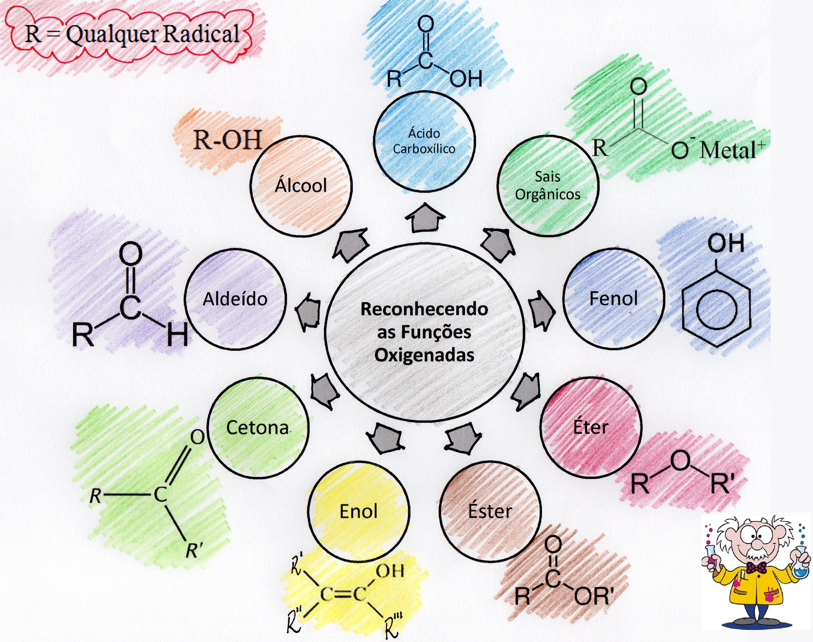

3ª Série - Conteúdos
📷 Fotos dos Quadros
Funções Orgânicas


🎥 Vídeos Explicativos
Funções Orgânicas
Isomeria
📝 Atividades Forms
Teste 1 - Funções Orgânicas
Teste 2 - Compostos Orgânicos e Seus Elementos Fundamentais
🗺️ Mapas mentais
Funções Orgânicas
